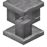

石砖烟囱帽
Stone Brick Chimney Pot
英文名: Stone Brick Chimney Pot命名空间 ID:
caupona:stone_brick_chimney_pot类型: 方块所属模组: Caupona资料检索: 🔎 在 MC百科 搜索「石砖烟囱帽」合成获得 (1)
有序合成Caupona


原始 JSON
{
"type": "minecraft:crafting_shaped",
"pattern": [
" S ",
"S S",
"B B"
],
"key": {
"S": {
"item": "minecraft:stone_slab"
},
"B": {
"item": "minecraft:stone_bricks"
}
},
"result": {
"id": "caupona:stone_brick_chimney_pot"
}
}